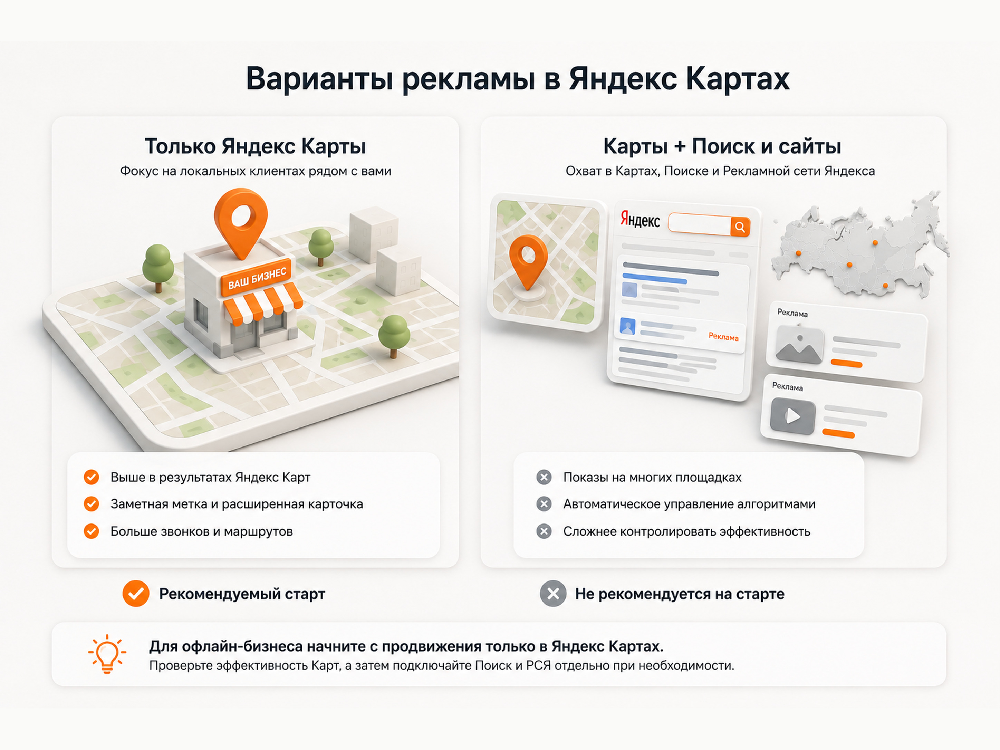
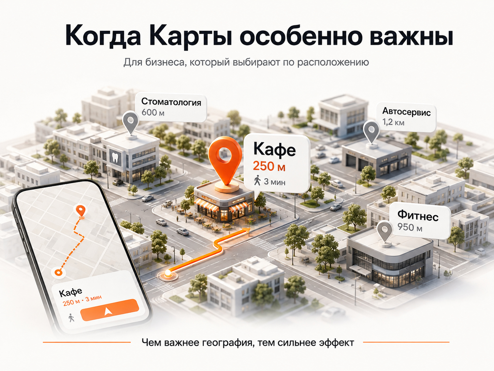
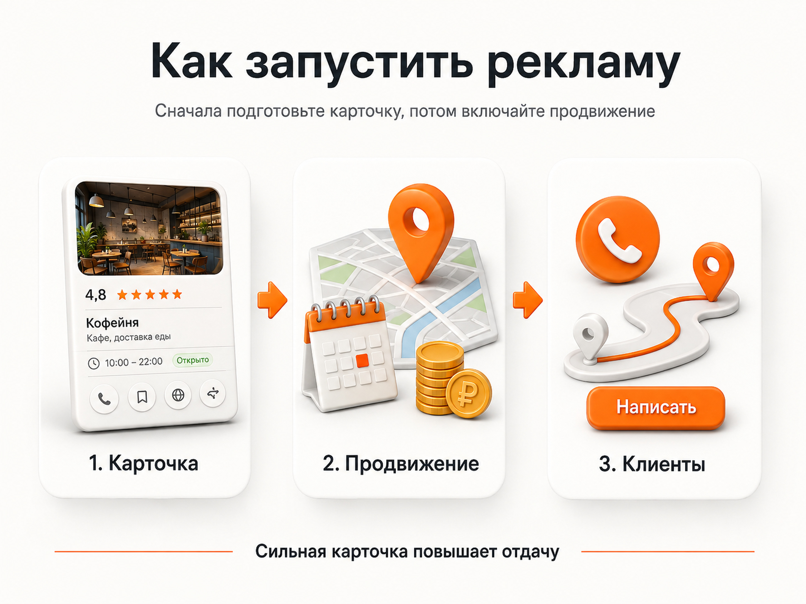

Блог о платном трафике
Сколько стоит реклама в Яндекс Картах и как она работает
Фиксированной цены у рекламы в Яндекс Картах нет. Для продвижения через Яндекс Бизнес стоимость рассчитывается для конкретной организации и выбранного периода размещения. В Яндекс Директе продвижение в Картах можно запускать отдельно, а оплата идет за клики.
Поэтому точную стоимость нельзя корректно назвать одной суммой без региона, категории бизнеса и выбранного способа запуска. Ниже разберем, как формируется цена и где посмотреть расчет именно для своей компании.
Сколько стоит реклама в Яндекс Картах
Единой фиксированной цены у рекламы в Яндекс Картах нет. Стоимость зависит от выбранного способа продвижения и параметров конкретной организации.
| Формат рекламы | Принцип оплаты | От чего зависит цена | Кому подходит |
|---|---|---|---|
| Яндекс Бизнес | Стоимость рассчитывается для конкретной организации и срока размещения | Регион, категория бизнеса, срок и прогноз потенциальных клиентов | Когда нужен максимально простой запуск продвижения локальной точки |
| Яндекс Директ, Карты и список организаций | Оплата за клики по рекламе | Аукцион и параметры конкретной кампании | Когда Карты нужно вести как отдельный управляемый рекламный канал |
Стоматология в Москве, автосервис в региональном городе и локальное кафе могут получить разные условия. Точную сумму сервис показывает до оплаты.
Как узнать точную стоимость рекламы в Яндекс Картах
Точную стоимость для конкретной организации нужно смотреть в интерфейсе Яндекса при создании продвижения. До оплаты сервис показывает доступные условия и бюджет для выбранной компании.
- Открыть нужную организацию.
- Перейти в раздел продвижения.
- Выбрать нужный формат размещения.
- Указать доступный срок или параметры кампании.
- Посмотреть рассчитанную стоимость до оплаты.
От чего зависит стоимость рекламы в Яндекс Картах
Цена рекламы в Яндекс Картах зависит не от одного тарифа, а от параметров конкретного бизнеса и выбранного способа продвижения.
- регион и расположение организации;
- категория или ниша бизнеса;
- срок продвижения;
- потенциальный спрос и прогноз количества клиентов;
- выбранный способ запуска: Яндекс Бизнес или отдельная кампания в Яндекс Директе.
Эти параметры не образуют единую формулу: разные рекламные продукты используют их по-разному.
Какие варианты рекламы есть в Яндекс Картах
Для локального бизнеса есть два основных сценария: автоматизированное продвижение через Яндекс Бизнес и отдельная кампания в Яндекс Директе.
| Вариант | Как работает | Когда выбирать |
|---|---|---|
| Яндекс Бизнес | Сервис использует данные карточки и автоматически распределяет размещение на подходящих площадках. | Когда нужен простой запуск и нет задачи вручную управлять отдельным каналом. |
| Яндекс Директ | Можно отдельно настроить продвижение организации в Картах и списке организаций. | Когда важны самостоятельные настройки и контроль результата по Картам. |

Как работает реклама в Яндекс Картах
Реклама помогает карточке организации стать заметнее, когда человек ищет услугу рядом или просматривает карту. Пользователь видит название, рейтинг, отзывы, фотографии, часы работы и может сразу построить маршрут или позвонить.
Рекламное продвижение не гарантирует первое место. На показы и позиции влияют релевантность запросу, расположение компании, качество карточки и параметры кампании.

Кому реклама в Картах нужна в первую очередь
В первую очередь реклама в Картах полезна бизнесу, который клиент выбирает по расположению: кафе, стоматологии, салоны красоты, клиники, автосервисы, фитнес-клубы, магазины и другие локальные компании.
Если клиенту важно, насколько удобно до вас добираться, он часто принимает решение прямо на карте. Для бизнеса без привязки к географии этот канал обычно не должен быть основным.
Что нужно сделать до запуска рекламы
Платить за продвижение пустой или плохо оформленной карточки - плохая идея. До запуска проверьте профиль организации.
Правильно выбрать рубрики
Компания должна находиться по тем услугам, которые реально оказывает. Не добавляйте десятки смежных категорий только ради охвата.
Заполнить товары и услуги
Пользователь выбирает между организациями прямо в Картах, поэтому ему нужно сразу видеть ассортимент и базовое представление о ценах.
Добавить нормальные фотографии
Особенно это важно для ресторанов, клиник, салонов, фитнес-клубов, гостиниц и магазинов.
Проверить контакты и график работы
Ошибочный телефон или старое расписание способны свести рекламный эффект к нулю.
Работать с отзывами
Рейтинг и отзывы помогают человеку сравнить соседние компании перед выбором. Большой бюджет не заменяет нормальную карточку.
Как настроить рекламу в Яндекс Картах
Есть два основных пути: Яндекс Бизнес и Яндекс Директ.
Через Яндекс Бизнес
Добавьте организацию в Яндекс Бизнес или получите права на уже существующую карточку. Затем откройте раздел продвижения, выберите доступный формат и срок, изучите рассчитанный бюджет до оплаты.
Это наиболее простой вариант для владельца бизнеса. Проверьте площадки, которые входят в размещение: не стоит подключать более широкий пакет автоматически, если задача - проверить именно Карты.

Через Яндекс Директ
В Директе можно настроить отдельное продвижение организации в Картах и списке организаций. Этот вариант удобен, когда рекламой занимается специалист или Карты нужно вести как самостоятельный управляемый канал.
Можно ли рекламироваться в Картах без сайта
Да. Пользователь может взаимодействовать непосредственно с карточкой организации: позвонить, построить маршрут, посмотреть фотографии, изучить услуги, открыть акцию или записаться.
Для небольшого кафе, салона или мастерской карточка в Картах иногда становится полноценной посадочной страницей. Поэтому ее оформлению нужно уделить столько же внимания, сколько обычному сайту.
Яндекс Бизнес или Яндекс Директ: что выбрать
Яндекс Бизнес - более простой автоматизированный запуск. Яндекс Директ - вариант для отдельного управляемого рекламного канала.
Если задача - проверить именно Карты, логично сначала запускать отдельное продвижение Карт. Не нужно автоматически смешивать Карты, Поиск и РСЯ в один пакет. Если Поиск или РСЯ нужны, их удобнее вести отдельно там, где можно контролировать результат.
Как оценивать эффективность рекламы в Картах
Оценивайте кампанию не по просмотрам карточки, а по действиям, которые важны бизнесу: звонкам, маршрутам, переходам на сайт, записям, обращениям и реальным посещениям точки.
Если часть клиентов переходит на сайт, дальше можно считать заявки и стоимость конверсии. При этом у офлайн-бизнеса часть продаж не отслеживается: человек может увидеть организацию, построить маршрут и приехать без звонка. Поэтому сравнивайте статистику с реальной динамикой обращений и посещений.
CPA в Яндекс Директе: что это и как считать стоимость конверсии